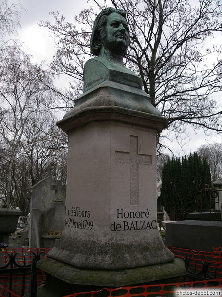
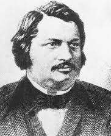

MỤC LỤC
SƠ LƯỢC VỀ TÁC GIẢ
LỜI GIỚI THIỆU
TẤM BÙA
NGƯỜI ĐÀN BÀ KHÔNG TIM
CƠN HẤP HỐI
KẾT LUẬN

Honoré de Balzac (1799-1850) là nhà văn hiện thực Pháp lớn nhất nửa đầu thế kỷ 19, bậc thầy của tiểu thuyết văn học hiện thực. Ông là tác giả của bộ tiểu thuyết đồ sộ Tấn trò đời (La Comédie humaine).
Cuộc đời
Honoré de Balzac sinh ngày 20 tháng 5 năm 1799 ở Tours. Ông là con trai của Bernard-François Balssa và Anne-Charlotte-Laure Sallambier, họ Balzac được lấy của một gia đình quý tộc cổ Balzac d'Entraigues. Cuộc đời ông là sự thất bại toàn diện trong sáng tác và kinh doanh - đó là tổng kết chung về thời thanh niên của Balzac từ khi vào đời cho đến năm (1828): Hai lần ứng cử vào Hàn lâm viện Pháp đều thất bại. Ông chỉ thật sự được văn đàn Pháp công nhận sau khi mất. Người ủng hộ ông nhiều nhất khi còn sống là Victor Hugo. Ông có một sức sáng tạo phi thường, khả năng làm việc cao. Thường chỉ ngủ một ngày khoảng 2 đến 3 tiếng, thời gian còn lại làm việc trên một gác xép.

Sự nghiệp
Giai đoạn 1829-1841
Sau tiểu thuyết lịch sử Les Chouans (Những người Chouans, 1829), Balzac cho ra đời liên tiếp nhiều tác phẩm nổi tiếng, trong nhiều cảm hứng và chủ đề khác nhau: La Peau de chagrin (Miếng da lừa, 1831), Le Médecin de campagne (Người thầy thuốc nông thôn, 1833), La Recherche de l'absolu (Đi tìm tuyệt đối, 1833), Eugénie Grandet (1833), Le Père Goriot (Lão Goriot, 1834).
Trong sự nghiệp sáng tác Balzac đã viết về nhiều đề tài và mỗi vấn đề đều có một số tác phẩm, tạo nên sự đa dạng trong tư tưởng cũng như trong nghệ thuật của ông. Balzac đã lần lượt đi qua nhiều phong cách trữ tình, châm biếm, triết lý và dần dần thiết lập một hệ thống cho các sáng tác của mình, bao gồm các chủ đề: nghiên cứu triết học (như các tác phẩm Miếng da lừa, Đi tìm tuyệt đối, Kiệt tác vô danh...), cảm hứng thần bí (như: Louis Lambert, Séraphita), nghiên cứu phong tục (trong đó ông thiết lập một hệ thống các đề tài mà ông gọi là các "cảnh đời" vì cuộc đời được ông ví như một tấn hài kịch lớn).
Giai đoạn 1841-1850
Balzac đã bắt đầu công việc tập hợp lại các tác phẩm theo chủ đề và thống kê sắp đặt lại trong một hệ thống có tên chung là Tấn trò đời.
Tư tưởng và tài năng nghệ thuật
Balzac là nhà văn sớm có ý thức về sự tái hiện cuộc đời một cách hoàn chỉnh ở đủ mọi góc cạnh của nó và được đặt trong hệ thống mà ông ví như một "công trình kiến trúc của vũ trụ" với tính chất vừa hệ thống vừa hoành tráng từ các tác phẩm của ông. Vũ trụ ấy là cuộc đời nhìn qua nhãn quang của ông tạo nên một "thế giới kiểu Balzac" in rõ dấu ấn của "cảm hứng vĩ mô".[1] Vì vậy, vũ trụ trong tiểu thuyết Balzac là một "vũ trụ được sáng tạo hơn là được mô phỏng".
Phê phán hay chất phủ định cao là khía cạnh được chú ý khi nói về tiểu thuyết Balzac: qua sự nghiệp sáng tác của Balzac cả một xã hội và con người dưới thể chế tư sản bị phơi bày với tất cả xấu xa tiêu cực, cũng từ đây những nỗi khổ đau, những tấn bi kịch xảy ra cho nhiều người, ở nhiều hoàn cảnh trong một xã hội mà đồng tiền là chân lý.
Vì sở trường của Balzac là việc miêu tả cái xấu, cái ác trong xã hội tư sản một cách thấu đáo và sắc sảo qua hệ thống ngôn từ và phong cách thích hợp, và đây cũng chính là nguyên nhân gây ra mối ác cảm của giới phê bình đương thời đối với Balzac.
Nên những nhân vật gây ấn tượng mạnh nhất và thành công nhất của Balzac là những nhân vật phản diện, thường được tác giả cho xuất hiện nhiều lần trong nhiều tác phẩm để người đọc theo dõi chặng đường phát triển tính cách, số phận, những bước thăng trầm trong cuộc chen chân trong thế giới đồng tiền, âm mưu và tội ác (Rastignac xuất hiện trong ba quyển: Lão Goriot, Bước thăng trầm của kỹ nữ, Miếng da lừa, hay Lucien Chardon xuất hiện trong Vỡ mộng, Bước thăng trầm của kỹ nữ, và Vautrin trong Lão Goriot.
Ngược lại, khía cạnh khẳng định cái đẹp trong các tác phẩm của Balzac bị cho là yếu: "Những nhân vật đức hạnh trong tiểu thuyết Balzac khá mờ nhạt..."[2]. hoặc: "Những nhân vật trong tiểu thuyết Balzac đều có cử chỉ tình cảm và phong cách thông tục. Khi muốn diễn tả sự thanh lịch quý phái, hào hiệp thì Balzac thường khoa trương một cách cầu kỳ: người phụ nữ đức hạnh và các cô thiếu nữ được khắc họa một cách ngượng nghịu..."[3]. Vd: Trong tác phẩm "Những quý bà cầu kỳ rởm", thì một số nhân vật đã bảo gia nhân mang ra "một thứ chất lỏng cần thiết cho cuộc sống" (nước) để mời khách.
Tiểu thuyết của Balzac phản ánh hiện thực xã hội không mấy tốt đẹp, nhưng chính Balzac lại từng khẳng định:" Xã hội đã tự tách ra hoặc xích lại gần hơn với những quy tắc vĩnh cửu, với cái chân thực, cái đẹp, tiểu thuyết phải là một thế giới tốt lành hơn..." (Lời tựa Tấn trò đời)
Như vậy, thế giới nghệ thuật của Tấn trò đời không đơn thuần là phản ánh cái thiện, cái ác trong xã hội, mà điều Balzac mong mỏi chính là cải tạo xã hội ngày càng tốt đẹp hơn.
Nghệ thuật của Balzac cũng là vấn đề đã từng gây tranh cãi, khi vẫn có ý kiến cho rằng "ông có một bút pháp thiếu thoải mái, thiếu sự thuần chất, nhưng vững vàng cụ thể đầy cá tính thể hiện một khí chất mạnh mẽ", "lối văn tối tăm hỗn độn" (confus), "sự thông tục" (vulgaire)... Đứng trước những biểu hiện đó nhiều nhà phê bình thời trước như: nhà lý luận lãng mạn Sainte Beuve không thích lối thể hiện (văn phong) của Balzac, nhà hiện thực duy mỹ - nhà văn Gustave Flaubert đã "cau mày" nhận xét "giá như Balzac biết viết văn". Và đến thế kỷ XX nhà văn André Gide cho rằng Balzac đã làm cho tác phẩm của ông trở nên cồng kềnh bằng "những yếu tố hỗn tạp, hoàn toàn không thể đồng hóa được bằng tiểu thuyết". Còn Marcel Proust lưỡng lự trước câu hỏi "nghệ thuật của Balzac có hay không?". Đồng thời André Gide và Marcel Proust cũng thừa nhận rằng "có những nhược điểm không thể tách rời khỏi những tác phẩm của ông".
Chú thích:
[1] Cảm hứng vĩ mô: Được hiểu là những tác phẩm văn chương phản ánh hiện thực thời đại của xã hội và số phận của con người xã hội như sự tha hóa của con người trong xã hội mà đồng tiền chi phối tất cả giá trị đạo đức và các mối quan hệ xã hội. Như những nhân vật trong Lão Goriot (Le père Goriot) sẵn sàng chạy theo đồng tiền và quyền lực chà đạp lên những giá trị đạo và tình cảm thiêng liêng nhất.
Cảm hứng vi mô: Được hiểu là những tác phẩm văn chương đi sâu vào thế giới nội tâm của con người khi con người đứng trước những khó khăn thách thức của cuộc sống. Cuộc đấu tranh đó là cuộc tranh đấu thầm lặng và gay gắt giữa cái thiện và cái ác, giữa cái cao cả và cái thấp hèn diễn ra trong nội tâm của con người. Như nhân vật ông già trong Ông già và biển cả của Ernest Hemingway hay nhân vật Hộ trong "Đời thừa" của Nam Cao.
[2] Hônêrê đơ Banzac (Honoré de Balzac) -Trọng Đức biên soạn -Nhà xuất bản Giáo dục.
[3] Như trên.